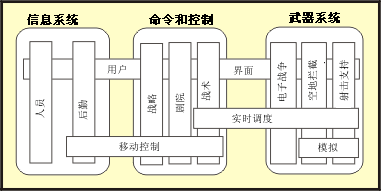

| 工作产品：引用体系结构 |
 |
|
|
引用体系结构工作产品是组织的可重用资产库的一部分。它们的目的是形成体系结构开发的起始点。 它们的范围包括现成的体系结构模式、体系结构机制和框架和完整的系统，功能已经使用证实。它们可能是普遍适用的，或用于范围很广、跨领域的一类系统，或者具有较窄的、特定于领域的侧重点。 通过选择现有引用体系结构（通过使用已经知道这些体系结构可以满足各需求），使用已测试的引用体系结构是解决许多非功能需求（特别是质量需求）的有效方法。引用体系结构可能已存在或从不同的抽象级别和从不同的角度使用它们。这些对应于 4+1 视图（请参阅“一组典型的体系结构视图”）。这样，软件设计人员可以按不同的完成程度选择什么是最适合的：仅适合体系结构设计，或者适合体系结构设计和实施。 通常，引用体系结构定义为不包含将用于构造系统的组件实例，如果它包含组件实例，就会变成产品线体系结构，但这不是严格意义上的区别。 在 Rational Unified Process（RUP）中，遵循引用体系结构的概念来包含对现有可重用组件（即实施）的引用。 |
| 简述 |
资产组织拥有引用体系结构资产的组织需要决定如何分类和组织各资产以使软件设计人员容易进行检索（通过匹配新系统的选择条件来完成）。 虽然创建和存储引用体系结构当前不属于 RUP 的范围，建议围绕领域的概念组织体系结构，领域是一个主题区域，定义了系统或系统系列某方面的知识和概念。这里允许在应用程序以下的级别使用术语“领域”。此用法与某些定义稍有不同，例如 [HOF99] 中的定义，但非常符合 [LMFS96] 中的定义： “产品线领域：一组能力（现在的和／或将来的）－ 定义用于促进沟通、分析和设计，以确定、设计和管理产品线的共性。这样的领域可能包含关系紧密的各组最终用户系统、跨多个系统公用的功能或广泛适用的各组底层服务。” 该定义包含以下概念：用于组成系统的事物就其本身而言可以属于一个值得研究的领域中。下图从 [LMFS96] 获取，说明了该原理。  美国陆军的水平和垂直领域 该图显示主系统系列、信息系统、命令和控制以及武器系统，每个都有一些完全包含的垂直领域以及水平领域，这些领域跨越这些系统并且跨越系统系列。因此，实时调度概念适用于命令和控制的战术领域以及武器系统的所有垂直领域。因此以下做法可能是有意义的：一次解决所有这些领域的实时调度问题，并将以此方式开发的知识和资产视作独立的领域，该独立领域与“电子武器”而非“人事信息系统”关联。 内容引用体系结构与工作产品：软件体系结构文档及关联模型具有相同的形式，但没有特定于项目的引用，项目引用和特征更具一般性，因而可以在资产库中适当地将引用体系结构分类。与软件体系结构文档（SAD）相关联的典型模型有用例模型、设计模型、实施模型和部署模型。 对 SAD 及其关联模型的访问向软件设计人员提供了几个入口，他可以选择只使用体系结构的概念或逻辑部件（如果组织的重用策略允许此操作）。在另一个极端，软件设计人员可以从资产库中选择完整的工作子系统和物理级别的部署模型（即完整的硬件和网络蓝图）。 需要其他支持工作产品以使体系结构资产可用。
|
|---|---|
| 主要描述 | 资产组织拥有引用体系结构资产的组织需要决定如何分类和组织各资产以使软件设计人员容易进行检索（通过匹配新系统的选择条件来完成）。 虽然创建和存储引用体系结构当前不属于 RUP 的范围，但建议围绕术语定义：域的概念组织体系结构，域是一个主题区域，定义了一个系统或一系列系统某方面的知识和概念。这里允许在应用程序以下的级别使用术语“领域”。此用法与某些定义（例如 [HOF99] 中的定义）稍有不同，但非常符合 [LMFS96] 中的定义： “产品线领域：一组能力（现在的和／或将来的）－ 定义用于促进沟通、分析和设计，以确定、设计和管理产品线的共性。这样的领域可能包含关系紧密的各组最终用户系统、跨多个系统公用的功能或广泛适用的各组底层服务。” 该定义包含以下概念：用于组成系统的事物就其本身而言可以属于一个值得研究的领域中。下图从 [LMFS96] 获取，说明了该原理。
美国陆军的水平和垂直领域 该图显示主系统系列、信息系统、命令和控制以及武器系统，每个都有一些完全包含的垂直领域以及水平领域，这些领域跨越这些系统并且跨越系统系列。 因此，实时调度概念适用于命令和控制的战术领域以及武器系统的所有垂直领域。因此以下做法可能是有意义的：一次解决所有这些领域的实时调度问题，并将以此方式开发的知识和资产视作独立的领域，该独立领域与“电子武器”而非“人事信息系统”关联。 内容引用体系结构与工作产品：软件体系结构文档及关联模型具有相同的形式，但没有特定于项目的引用，项目引用和特征更具一般性，因而可以在资产库中适当地将引用体系结构分类。与软件体系结构文档（SAD）相关联的典型模型有用例模型、设计模型、实施模型和部署模型。 对 SAD 及其关联模型的访问向软件设计人员提供了几个入口，他可以选择只使用体系结构的概念或逻辑部件（如果组织的重用策略允许此操作）。在另一个极端，软件设计人员可以从资产库中选择完整的工作子系统和物理级别的部署模型（即完整的硬件和网络蓝图）。 需要其他支持工件以使体系结构资产可用。
|
| 可选 | |
|---|---|
| 已计划 |
| 说明选项 | UML 表示方法：大量相关的体系结构视图：用例、逻辑、进程、部署、实施、数据。
除非系统完全没有先例，如果引用体系结构存在且开发组织可以访问它，则应检查引用体系结构的适用性（针对领域和开发类型）。 引用体系结构的创建是要在组织级别处理的问题。 当然能够省略上面列出的一些内容，并且仍可以从体系结构重用中得到好处。例如，可以省略测试模型（虽然如果修改体系结构的话，必须重写测试）。至少可以期望得到设计模型和一些相关联的行为描述（可能是用例模型）。如果不符合以上条件，则很难将资产称为引用体系结构。 它可能仍是某种有效模式。 |
|---|
© Copyright IBM Corp. 1987, 2006. All Rights Reserved. |